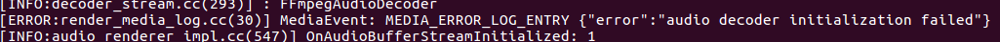

B001: begin
按照官网的方法，编译了第一版chromium。首先找个视频试一下，直接不能放，抓日志看一下，报video decoder initialization failed错误。如下图：

然后试了一下音频播放，音频能正常播放，也就是说video decoder不可用，audio decoder正常。这种情况应该是编译选项配置问题，和音视频相关的编译选项首先想到4个：
media_use_ffmpeg、enable_ffmpeg_video_decoders、proprietary_codecs和ffmpeg_branding。这4个参数的意义分别是：
1、media_use_ffmpeg,媒体使用ffmpeg；
2、enable_ffmpeg_video_decoders，在android平台下编译ffmpeg时是剔除video的Demuxer和Decoder，chromium使用自己的demuxer和decoder；
3、proprietary_codecs和ffmpeg_branding,控制media的行为，如果proprietary_codecs= true,ffmpeg_branding = "chrome",这chromium和chrome保持一致支持MP4等。
其中，前两个是默认的，
都定义都在media/media_options.gni中，可以用assert(media_use_ffmpeg),assert(enable_ffmpeg_video_decoders)断言一下，是否为想要的值(media_use_ffmpeg = true,enable_ffmpeg_video_decoders = false)。
第三个和第四个需要在args.gn赋值。因为我安装官网的说明配置编译选项和编译命令，所以只配置了target_os，在args.gn中添加proprietary_codecs = true，ffmpeg_branding = "chrome"。重新编译，安装，验证chromium可以播放
视频。
chromium media音频基于FFmpeg（视频也可以），FFmpeg就是一个有限开源的，对于开源代码可以直接包含到代码直接编译，对于非开源项目不能直接编译到代码中，需要编译成库文件使用。设置is_component_ffmpeg =
true,FFmpeg会编译成FFmpeg.so。
第一个具备基本功能的浏览器完成。接下来可以调试、学习。致敬我的笔记本，出了老牛般的力，编出蜗牛的速度。可怜！